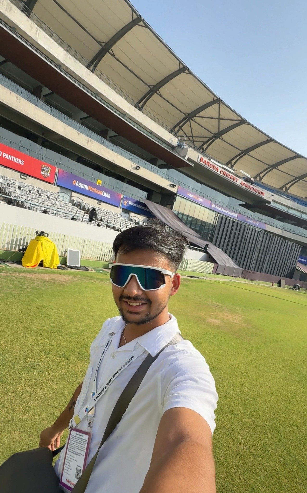

YOU BUILD THE CAR.
I BUILD THE CONNECTION.
Engineering changes what's possible. Storytelling helps people understand why it matters. Here's how I'd bring the two together for your team.
One engineering milestone. Three audiences.
Imagine the team has achieved an important technical milestone. It's a hypothetical scenario, not a claim about an actual Formula Electric Belgium project. Who should hear the story first?
Measure:
A good marketing story starts with the same engineering facts—but changes the framing for its audience. The technical team validates accuracy; the marketing team makes the story accessible.
I've done the fast-moving work.
Baroda Premier League
Produced live cricket coverage, highlights and interviews during a 20-day tournament as part of a three-person media team.
Parul University
Progressed through two roles over four-plus years; contributed to communications across 10+ accounts and coordinated colleagues and event workflows.
Chemical Engineering
Completed Diploma and BTech academic requirements, including a diploma thesis on green hydrogen. I enjoy understanding the science before telling the story.
These are summaries of my prior experience. Work samples and further details are available in my portfolio and CV.

ON THE FIELD · SPORTS MEDIAI'm Krishnakumar.
From the cricket field to the racing paddock.
Different sports. The same passion for the moments, people and stories that make them unforgettable.
I study Marketing – International Brand Management at NEOMA Business School in France. With more than four years in social media and digital communications, live cricket media experience and a Chemical Engineering background, I want to make technical achievements feel human.
Available for a 3–4-month internship between May and September 2027, subject to a suitable internship agreement and the team's requirements.